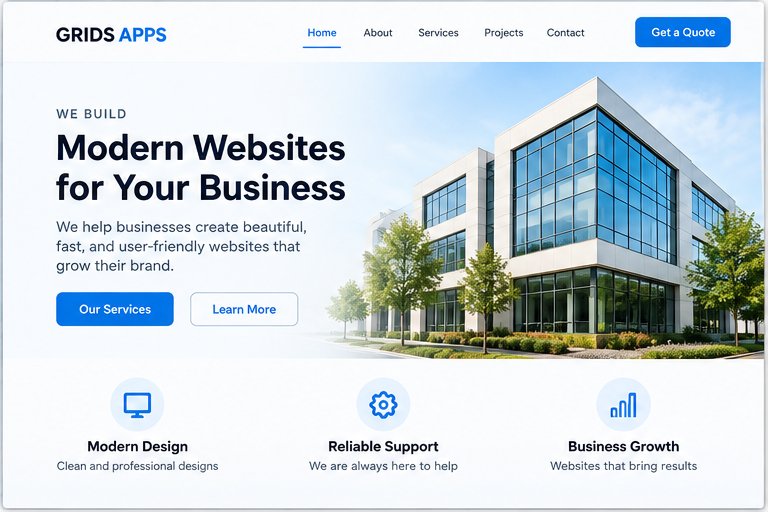
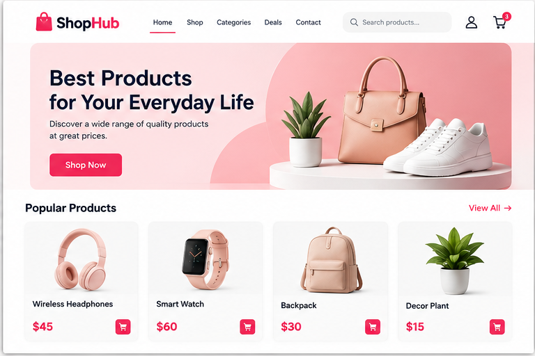
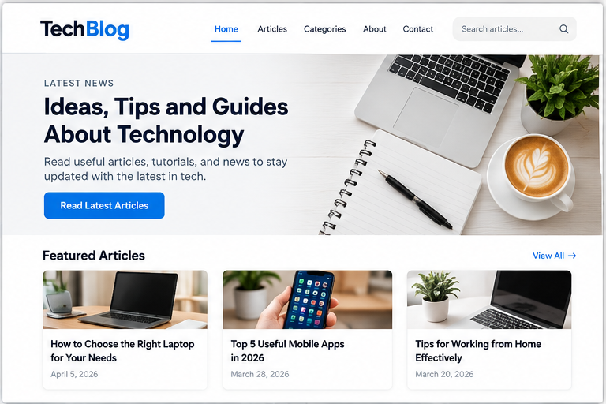
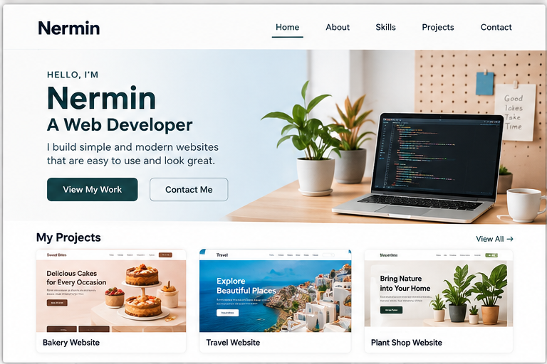

Website Examples

Business Website - A website for companies to
introduce their business, show their services,
and help customers contact them easily.

Online Store - A website where customers can
explore products, check prices, and buy
what they need online.

Blog Website - A place to share articles,
useful tips, and news about different topics.
Visitors can read and learn new things.

Portfolio Website - A personal website used
to show skills, projects, and previous work.
It helps people learn more about the developer.